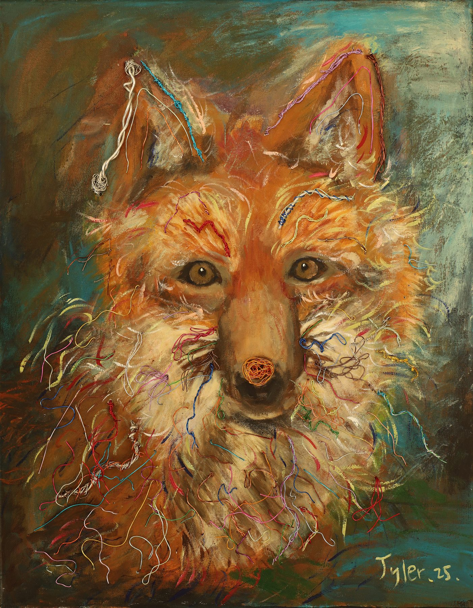
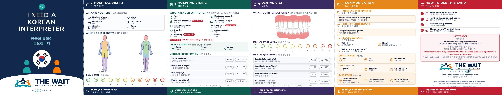

Tyler Jung is a senior in the Pre-Med Academy at Palisades Park Jr./Sr. High School in New Jersey. He is writing a paper on musculoskeletal injuries in surgeons, helped build THE WAIT, a documentary and bilingual card project for Korean elders who put off seeing a doctor, and makes portraits and mixed-media work out of paint, buttons, and wire.
Palisades Park, New Jersey · Class of 2027 · First-generation college applicant

I speak Korean at home and English everywhere else, and most of what I have done in high school happens in the gap between those two rooms: carrying questions between Korean elders and the hospitals that do not speak their language, carrying student complaints to the Board of Education, and carrying what I learn in biology onto a canvas when the textbook stops making sense.
I plan to study biology and public health on the way to medicine. The question I keep returning to is what work does to a body, whether that body belongs to a surgeon who has stood for ten hours, a swimmer who has trained fifteen, or an elder who has waited months to be seen.
At home I help run a household with my mother and my two aunts and look after my younger sister. On Wednesdays we eat at Wendy’s. I am the one who remembers.
Palisades Park Jr./Sr. High School, Pre-Med Academy
Eleven works. I co-founded the People Palette Club, a portrait club that draws people in our community as a way of thanking them, and I have organized three group exhibitions. Click any piece to see it larger with its story.
Why do Korean elders in Bergen County wait out pain instead of seeing a doctor? Language, cost, not knowing which clinic, no ride. The resources already existed. What did not exist was someone standing in the gap to make them findable.
Young Global Leaders of the East (YGLE) · documentary released October 30, 2026
A documentary and a Korean-English card project about Korean seniors who delay care because of language, cost, lack of information, and transportation. I took the hospital side: I searched local hospitals for free screenings, served as the link between YGLE and the hospitals, and helped design the bilingual cards that point an elder to a screening, an affordable clinic, or an interpreter.
Bilingual materials, medical and dental content reviewed by licensed professionals
The card folds into five panels an elder can hand across a front desk: “I need a Korean interpreter,” two hospital-visit panels for symptoms and pain level, a dental panel, and a communication panel. The two flyers list what I found when I searched: free and low-cost health screenings and support services on one side, including the Bergen County cancer screening program (CEED), the Bergen Volunteer Medical Initiative, Holy Name’s Asian Health Services, and hospital Charity Care, and low-cost dental care on the other, from community clinics to the Rutgers dental school student clinics. Each entry says who qualifies, what it costs, the phone number, and whether Korean help is available.

Central Sterile Supply, grades 11 to 12 · 95 hours
Delivering supplies and instrument carts through the hospital for the department that cleans, packs, and sends out what surgeons use. I never saw an operation. I saw the carts come back, and I started wondering about the hands that used them.
October 2026 to present
My first placement that involves patients rather than carts.
Clothing Donations to Help Kids in the World
Built hospital partnerships, including Hackensack University Medical Center, to deliver more than $15,000 of new clothing to pediatric patients and their families.
Grades 11 to 12 · 30 studies read, 27 included (1994 to 2025, 5,531 participants) · manuscript in progress, unsubmitted
It started as an argument in biology class about whether the people who heal others need care themselves. I went looking for the evidence. Surgeons and physicians work for hours in awkward, static positions, repeating strenuous and precise movements, and the thirty studies I gathered from PubMed and Google Scholar, twenty-seven of which met my criteria for the review, show what that does to a body over a career.
The paper argues that protecting the health and career longevity of the people who operate on us is not a side issue for medicine but a condition of it. The manuscript is my own work and has not been submitted for publication.
Grades 10 and 11
Elected by the student body two years in a row to sit with the Board and bring it what students were not saying out loud, from broken sinks to what the school day actually feels like. The Board President once called me a natural leader; I am still trying to earn it.
Grades 10 to 12
Co-built and launched Mo Soop, an anonymous peer-support app that gives students a judgment-free place to be heard, from concept to public launch. For the Finals Relief Project I designed and 3D printed stress-relief clickers, 180 of them donated to a neighboring high school, each one routing its owner to digital mental-health resources.
Grades 10 to 12
A club of student artists who make personalized portraits for people in our community as a way of saying thank you. We held a public exhibition of portraits for the Ridgefield Firefighters.
Grades 9 to 12
Six years
Eleven to fifteen hours a week in season. Most of what I know about discomfort, and about getting back in the next morning anyway, I learned in the pool.